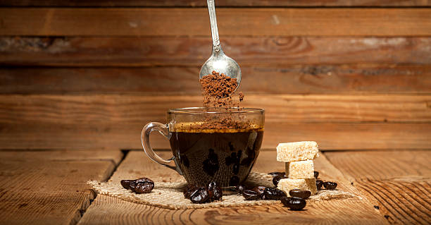

Instant Coffee Recipe

Description
Instant Coffee is a great way to get a quick boost.
It is easy to make and gets you ready to do your work.
Ingredients
- Electric Kettle with 2 cups of water in it
- Instant Coffee Mix
- Milk (optional)
- Sugar (optional)
Steps
- Turn on kettle and wait until water boils and it
turns itself off
- Take a teaspon of the instant coffee mix and
put it into a mug
- Pour hot water into the mug and stir the instant coffee.
Making sure all the powder is disolved.
- If desired add a little milk and or sugar then
stir until well blended.
- Wait until the coffee cools slighly then
drink and enjoy